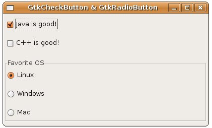

核
取鈕（Check Button）是可以進行選項複選的元件，單選鈕（Radio
Button）是只能進行選項單選的元件，在GTK中分別使用GtkCheckButton
與GtkRadioButton來負責，它們是雙態按鈕GtkToggleButton的子類：
GtkToggleButton
+----GtkCheckButton
+----GtkRadioButton
建立核取鈕或單選鈕的方式與建立一般按鈕類似，您可以使用gtk_check_button_new()、
gtk_check_button_new_with_label()、gtk_check_button_new_with_mnemonic()，來
建立核取鈕，GtkRadioButton必須使用按鈕群組（Button
Group）來加以群組，來表示哪些單選項為一個群組，彼此互斥，同時間只能選擇一個，例如
gtk_radio_button_new_with_label()函式：
GtkWidget *gtk_radio_button_new_with_label(GSList *group, const gchar *label);
第一次建立GtkRadioButton時，GSList的參數直接設為NULL即可，接著使用gtk_radio_button_get_group()獲得按鈕群組;
GSList *gtk_radio_button_get_group( GtkRadioButton *radio_button);
例如以下的程式碼會先建立一個GtkRadioButton，接著從已建立的GtkRadioButton獲得按鈕群組，然後再用以建立另一個GtkRadioButton，如此兩個單選鈕就屬於同一個群組，同時間只能選取一個：
GtkWidget *radio1 = gtk_radio_button_new_with_label(NULL, "Linux");
GtkWidget *radio2 = gtk_radio_button_new_with_label(
gtk_radio_button_get_group(GTK_RADIO_BUTTON(radio1)) , "Windows");
您也可以使用gtk_radio_button_new_with_label_from_widget()，這可以省略gtk_radio_button_get_group()這道手續，例如：
GtkWidget *radio1 = gtk_radio_button_new_with_label(NULL, "Linux");
GtkWidget *radio2 = gtk_radio_button_new_with_label_from_widget(
GTK_RADIO_BUTTON(radio1) , "Windows");
由於GtkCheckButton與GtkRadioButton都屬於GtkToggleButton的子類，如果要設定按鈕為選取狀態，則直接使用gtk_toggle_button_set_active()函式即可。
下面的程式為GtkCheckButton與GtkRadioButton配置的基本示範：
#include <gtk/gtk.h>
GtkWidget* checkButtonsNew() {
GtkWidget *check1, *check2;
GtkWidget *vbox;
check1 = gtk_check_button_new_with_label("Java is good!");
check2 = gtk_check_button_new_with_label("C++ is good!");
vbox = gtk_vbox_new(TRUE, 5);
gtk_box_pack_start(GTK_BOX(vbox), check1, TRUE, TRUE, 5);
gtk_box_pack_start(GTK_BOX(vbox), check2, TRUE, TRUE, 5);
return vbox;
}
GtkWidget* radioButtonsNew() {
GtkWidget *radio1, *radio2, *radio3;
GtkWidget *vbox;
radio1 = gtk_radio_button_new_with_label(NULL, "Linux");
radio2 = gtk_radio_button_new_with_label_from_widget(
GTK_RADIO_BUTTON(radio1) , "Windows");
radio3 = gtk_radio_button_new_with_label_from_widget(
GTK_RADIO_BUTTON(radio1) , "Mac");
vbox = gtk_vbox_new(TRUE, 5);
gtk_box_pack_start(GTK_BOX(vbox), radio1, TRUE, TRUE, 5);
gtk_box_pack_start(GTK_BOX(vbox), radio2, TRUE, TRUE, 5);
gtk_box_pack_start(GTK_BOX(vbox), radio3, TRUE, TRUE, 5);
return vbox;
}
int main(int argc, char *argv[]) {
GtkWidget *window;
GtkWidget *vbox;
GtkWidget *frame;
gtk_init(&argc, &argv);
window = gtk_window_new(GTK_WINDOW_TOPLEVEL);
gtk_window_set_title(GTK_WINDOW(window), "GtkCheckButton & GtkRadioButton");
gtk_window_set_default_size(GTK_WINDOW(window), 400, 50);
vbox = gtk_vbox_new(FALSE, 5);
gtk_box_pack_start(GTK_BOX(vbox), checkButtonsNew(), TRUE, TRUE, 5);
frame = gtk_frame_new("Favorite OS");
gtk_container_add(GTK_CONTAINER(frame), radioButtonsNew());
gtk_box_pack_start(GTK_BOX(vbox), frame, TRUE, TRUE, 5);
gtk_container_add(GTK_CONTAINER(window), vbox);
g_signal_connect(GTK_OBJECT(window), "destroy",
G_CALLBACK(gtk_main_quit), NULL);
gtk_widget_show_all(window);
gtk_main();
return 0;
}
執行的畫面如下所示：

|
|